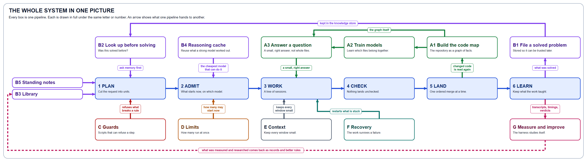

A plain-words rewrite of the split dated 17 November 2026. It has the same rows, days and owners. If anything here disagrees with the original, the original wins. As in the original, Me is the person who wrote the split, and You is the person building the testbed.
| Word | Meaning |
|---|---|
| Package (WP1, WP2a…) | One area of work. All 484 ideas in the catalogue are sorted into 16 packages, plus WP13, the testbed. |
| Row | One task in this split. A package can be split into a You row and a Me row. |
| Decision (D07, LIB…) | A question only Me can answer. Some rows can't start until it is answered. |
| Testbed | Your own small project: Python, Postgres and pytest, like the clinic. New tools get tried on it first. |
| Gate, CI | The tests that must pass before code is merged. CI is the same tests run automatically on GitHub. |
| Lane, wave | A lane is one AI session working on one task in its own copy of the repo (a "worktree"). A wave is a batch of lanes run at once. |
| Record-only | The tool reports what it finds but blocks nothing yet. |
| Planted | A mistake made on purpose, to prove a check catches it. |
| Port | To move a piece from the testbed into a real project. |
| E · G · T · M | E: days estimated in the 14 Nov edition. G: a guess. T: a target to hit. M: measured. |
"Waits on" is what has to exist or be answered first. Days are focused work. The status column is as of 20 Nov.
| # | Package | What you build, in plain words | Waits on | Days |
|---|---|---|---|---|
| 1 | WP11 Decisions and pages | One web page listing every decision Me still owes, built from a JSON file. Next to it is a booking list for agent runs on Me's PC, kept inside Me's D07 budget. Heavy checks still queue for a turn with ff-slot.sh, the PC's turn-taking lock.Done when: nothing waits on Me for more than a day (T), and every wait is written down. Status: built, record-only ( work/wp11-decisions/). | Me's answers. Start here. | 1.5 G |
| 2 | WP10b-CI Skills check | An automatic check on the instruction files for Claude's helper agents and skills. It checks the header block, a fixed model and a short tool list. You prove it on this repo's .claude/ folder: 13 skills, 12 agents. It runs record-only first. Me adds it to FixFlow.Status: built. 0 errors, 3 warnings ( work/wp10b-ci/). | Nothing | 1.0 G |
| 3 | WP13 Your testbed | Your own small project, built by Claude Code sessions on your Mac. It uses Python, Postgres and pytest like the clinic, so the lessons carry over. It needs a check that takes minutes, database migrations, GitHub Actions, and lanes in worktrees. It keeps growing as the rows below use it. Done when: the check runs inside a container, CI is green, and two waves of lanes have merged. | D24 (your own Claude plan) and D07 for your account | 3.0 G |
| 4 | WP6c Docs true to code | CLAUDE.md states facts such as "the newest migration is X". Turn those facts into a CI check, so a wrong fact fails the build. Me ports it to FixFlow. Done when: a fact made wrong on purpose turns CI red on your testbed. | WP13 | 1.0 G |
| 5 | WP2b Gates and CI | CI steps that fail when integration tests were quietly skipped, or when zero tests ran. Add a step that re-runs a failing test once before calling it a real failure, which catches flaky tests. Prove it with planted skips and an empty run. Me proves the Jest / Node 22 side on FixFlow. Then study the gate wait times Me exports on day 0. | WP13. Me's gate-wait export. | 2.0 G |
| 6 | WP2a-build The check | Three helpers for heavy test runs:
| WP13 | 2.0 E |
| 7 | WP3a Gate and merge scripts | Scripts that check the AI's claims without spending tokens:
Done when: on your testbed, the verdict script flags the overstated claims you plant with under 10 % false flags (T). The merge queue also flags, by itself, the unread final versions you plant. | WP13. D12–D20 as Me answers them. | 3.5 E |
| 8 | WP9 First use, real hosts | A "zero-seed walk": start the app on an empty database and go through first use, as a gate step. Add a load drill of your own, modelled on the clinic's 12-user drill. After D21, rehearse your testbed on a rented server. Done when: the walk catches a first-use bug you plant, and passes after the fix. | WP2a-build. D21 for the host. | 2.5 E |
| 9 | WP7 Graph v2, measuring side | Me already has a test set: 4,829 recorded "lookups" (questions agents asked about the code), with two simple baselines measured on 14 Nov (M). Build the same test set from your own sessions, on the testbed and in this repo. Then build:
Done when: the replay runs on your lookups, and runs unchanged on Me's on Me's PC. | D23. WP8. | 3.5 G |
| 10 | WP5 Levers 3 and 4 | Before-and-after token counts on your own sessions for two savings tricks. Lever 3 batches several lookups into one. Lever 4 writes big files with a script instead of having the model type them. Use the token-spend scripts in this repo. | WP13. D07. | 1.25 G |
| 11 | WP12b The key table | The table that records which session owns which piece of work (a "scope"). Make it safe when several sessions write at once:
Done when: simulated sessions never give a scope two owners or lose a row. The test has two children, the old session they replace, and a parent restarted after a crash, all writing at once. | Split rule 1.6–1.8 | 2.0 G |
| 12 | WP6a The library | The "library" is an idea: a store of solved problems the AI looks up before solving. Draft its list of weak spots from LIBRARY-PATHWAYS-2026-11.md, each with its "alone" and "last" weight, for Me to agree (decision LIB). Then write a fair test plan for it, the "held-out pilot", following Me's WP8 contract. | LIB. WP8. | 1.5 G |
| Your total | 24.75 | |||
D07 and the gate-wait export happen on day 0. Everything else comes after P0a, FixFlow's pre-flight, which isn't counted.
| # | Package | What I deliver, in plain words | Waits on | Days |
|---|---|---|---|---|
| 1 | WP5 D07 | On day 0, work out the token budget from the November tally (about an hour, E): one budget for each of our accounts. The same day, export the gate wait times for your WP2b. | Nothing | 0.25 G |
| 2 | WP1 Machine and recovery | A nightly copy of everything not on GitHub, a "resume list" of what was mid-work after a crash, and a sensor logger. Done when: the copy is never more than 24 h old (T), and a clone from it shows the same commits. After a reboot, the resume list shows and the databases are healthy within 3 min (T). The next unexpected shutdown leaves a logger trace that ends at it. | My D04, D02 and D05 steps | 1.5 E |
| 3 | WP8 Measurement | The "rate sheet": every measured rate, tagged, and updated after each wave. Also the frozen "validation contract": the fixed rules for how every test is scored. | Your fresh read before I freeze it | 2.0 G |
| 4 | WP7-finish GNN and embeddings run | Close the model-training run on my PC. Let the held-out run finish, then grade it, check it for leaks and have it challenged. Write the result next to the graph test and answer D25. | My PC and its graphics card | 1.5 G |
| 5 | WP12 The 300k trial | Test letting sessions grow to a bigger window before they summarise themselves ("compaction"). Run one trial wave beside a matched wave that compacts earlier. This also measures lever 1, capping long windows. | D07. A lane wave. | 2.5 G |
| 6 | WP10a Briefs and workflows | The "save-as-run" rule, plus one saved review workflow with its raw outputs fingerprinted. Once your seal exists, it must catch a brief edit that flips a recorded verdict. New: a card of PC facts that survives compaction, such as "no python on PATH". | D07 | 1.5 G |
| 7 | WP6b Knowledge store audit | Check FixFlow's history for whether the same mistakes keep repeating (audit KS-0). No code. It decides whether the knowledge store gets built. | KS-D1. Never ahead of a ship phase. | 1.0 E |
| 8 | MTH-67 Lecture pass | Match each of the eleven bottleneck areas to the lectures that bear on it. Log every idea worth borrowing, each one challenged. Done when: every area has a lecture row, or "none found". | The lecture library on my PC | 1.5 G |
| 9 | WP2a Wire and measure | Fit your queue, heartbeat and reaper into the clinic's container check. Run Windows and the container side by side, and measure one check's peak memory. Done when: the typical gate takes about 230 s (T) with no Linux-only failures on main. After each merge, leftover copies and containers drop back to normal. | Your WP2a-build. WP1. D09–D11. | 2.0 E |
| 10 | WP4 Planner and lanes | Replay the plan check on FixFlow's first lane wave, then run it record-only on the next. It shows which lanes would clash and how many lanes to run, as advice to FixFlow's coordinating session. | WP8 | 2.0 G |
| 11 | WP3b Run your scripts | Run your transcript audit over my recorded sessions. Then replay your other WP3a scripts, record-only, over the clinic's 65 merges. Make the first count of claims a script can recheck ("PR-HALLU"). Done when: it finds the unread final versions of 10 and 11 Nov by itself, and counts the main session's own edits per merge. | Your WP3a | 1.0 E |
| 12 | Ports | Put your pieces into our real projects:
| Your rows 2, 4, 5 and 8 | 2.75 G |
| 13 | WP10b Skills review | Check the skills and agents for correct domain facts: Android, Odoo, accounting. Count how often each one triggers, within D07. Compare the token use of the pinned cheaper agents with the built-in agent's. | Your WP10b-CI | 1.0 G |
| 14 | WP7 Replay on my lookups | Run your replay over my 4,829 recorded lookups and score it against D23's pass marks. | Your WP7. D23. | 0.5 G |
| 15 | Reviews | Read your scripts before any of them is allowed to refuse anything, and agree the LIB list with you. This is spread across the round. | Your work | 0.75 G |
| My total | 21.75 | |||
| Decision | In plain words | Holds up |
|---|---|---|
| D07 | How many tokens AI work may spend per 5-hour window, per account | Row 3 testbed, row 10 levers |
| D24 | "Your own Claude plan". The exact question isn't written in the repo yet. | Row 3 testbed |
| D12–D20 | The rules for the gate and merge scripts: what severity labels mean, what a script may refuse, and similar | Row 7 |
| D21 | Rehearse on a real rented server? | Row 8 (the last part only) |
| D23 | What the replay must show to count as a success | Row 9 |
| LIB | Me agrees the library's weak-spot list | Row 12 |
The live list is the decision board: work/wp11-decisions/index.html. To rebuild it, run python3 work/wp11-decisions/build.py.
The diagram from 20 Nov (docs/program/pipeline-diagram/) draws the harness as 19 pipelines. Six stages are in the middle: Plan, Admit, Work, Check, Land, Learn. Around them are code knowledge (A), memory (B), guards (C), limits (D), context (E), recovery (F), and measure-and-improve (G).

The diagram doesn't name the packages. This match is my reading of its step names, so check it before relying on it.
| Package | Who | Pipeline box |
|---|---|---|
| WP1 Machine and recovery | Me | F Recovery |
| WP2a The check (queue, heartbeat, reaper) | Both | D Limits ("how many run at once") and 4 Check ("the shared check") |
| WP2b Gates and CI | Both | 4 Check |
| WP3 Gate and merge scripts | Both | 4 Check (typed verdict), 5 Land (one ordered merge), C Guards (sealed ledger) |
| WP4 Planner and lanes | Me | 1 Plan (who waits for whom, who would clash) |
| WP5 Token budget | Both | E Context (the six levers), 2 Admit |
| WP6a The library · WP6b Knowledge store | You · Me | B1 File a solved problem, B2 Look up before solving |
| WP6c Docs true to code | Both | B5 Standing notes (CLAUDE.md), C Guards |
| WP7 Retrieval and graphs | Both | A1 Build the code map, A2 Train models, A3 Answer a question |
| WP8 Measurement · MTH-67 lecture pass | Me | G Measure and improve |
| WP9 First use, real hosts | Both | 4 Check |
| WP10a Briefs and workflows | Me | 3 Work ("brief in, fixed form out") |
| WP10b Skills and agents | Both | B5 Standing notes, 2 Admit (which model) |
| WP11 Decisions and pages | You | 1 Plan (the board loaded at session start) |
| WP12 Orchestration tree and key table | Both | 3 Work (a tree of sessions), F Recovery |
| WP13 Your testbed | You | All of them, in miniature: the place each piece is tried first |